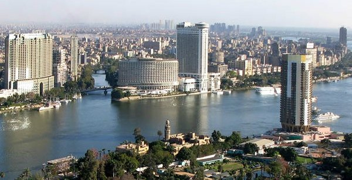
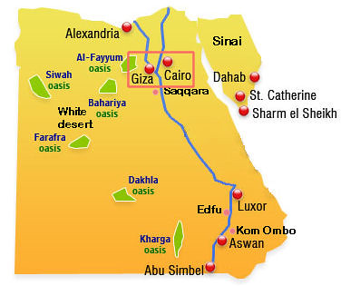
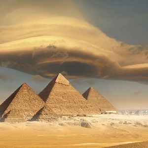
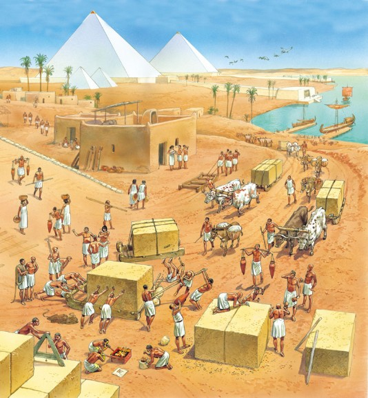
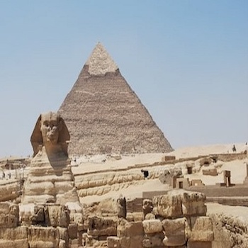
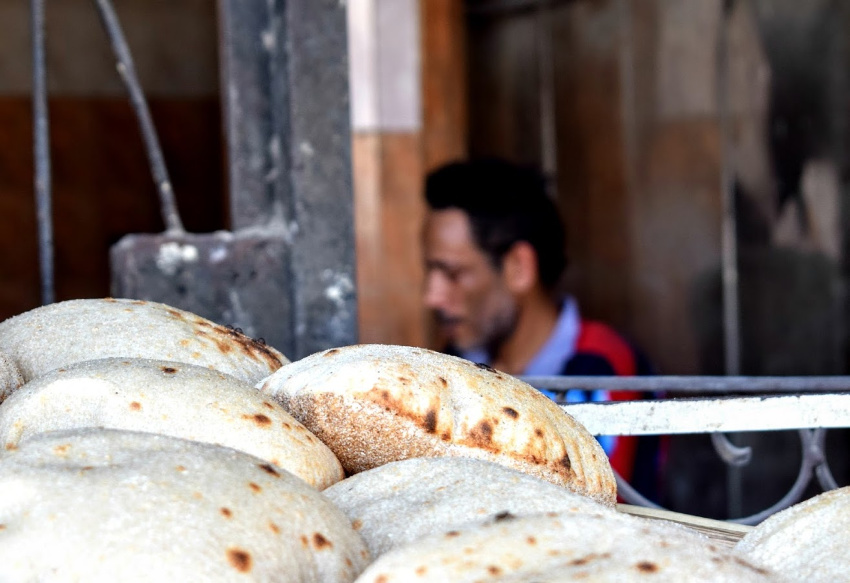
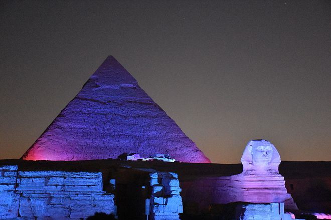

Introduction
Giza is the second-largest city in Egypt after Cairo and fourth-largest city in Africa after Lagos, Kinshasa and Cairo. It is the capital of Giza Governate with a total population of 8.8 million as of October 2018. It is located on the west bank of the Nile, 4.9 km southwest of central Cairo, and is a core city of the Greater Cairo metropolis. Giza is most famous as the location of the Giza Plateau, the site of the some of the most imporessive and ancient monuments in the world. Giza is a plateau southwest of modern Cairo which served as the necropolis for the royalty of the Old Kingdom of Egypt. Most famous for the pyramids of Khufu(completed in c. 2560 BCE) and the Great Sphinx(built 2500 BCE),recent excavations on the plateau have revealed numerous private tomb complexes and workers' quarters. The original necropolis of Giza was laid out with amazing precision and skill but, once it became associated with the great kings of Egypt and their pyramids, attracted the attention of less prominent officals of lower rank. These officials had enough money and prestige to buy their way into burial plots at Giza but had no regard for the symmetry of the original schematics and had their tombs dug wherever they found available space. This resulted ina number of grave complexes throughout Giza which would not have been authorized by the kings who built the famous pyramids which, thorughout history, have drawn vistors from around the world.
Geography & Demographics
The city of Giza is the capital of the Giza Governorate, and is located near the northeast border of this governorate. Technically, Giza may not be an incorporated municipal unit, and therefore not a city at all. In a typical Egyptian fashion, there are two districts within the Governorate with the same name: a kism/qasm and associated markiz. Some 9 urban kisms of Giza Governorate form collectively a contiguous area of 98.4 km2 on the Nile directly opposite Cairo, and recorded a preliminary count of 4,146,340 in 2017 census count, not including the Al-Ḥawāmidiyah kism separated by Giza markiz.
The city's population was reported as 2,681,863 in the 2006 national census, while the governorate had 6,272,571 at the same census, without specifying what the city is.
Environment
Climate
Giza experiences a hot desert climate like arid climate (Köppen: BWh). Its climate is similar to Cairo, owing to its proximity. Wind storms can be frequent across Egypt in spring, bringing Saharan dust into the city during the months of March and April. High temperatures in winter range from 16 to 20 °C (61 to 68 °F), while nighttime lows drop to below 7 °C (45 °F). In summer, the highs are 40 °C (104 °F), and the lows can drop to about 20 °C (68 °F). Rain is infrequent in Giza; snow and freezing temperatures are extremely rare. Up to August 2013, the highest recorded temperature was 46 °C (115 °F) on 13 June 1965, while the lowest recorded temperature was 2 °C (36 °F) on 8 January 1966.
Transportation System
Transportation in Giza comprises an extensive road network, rail system, subway system, and maritime services. Road transport is facilitated by personal vehicles, taxi cabs, privately owned public buses and microbuses.
Giza shares with Cairo a subway system, officially called the "Metro (مترو)", a fast and efficient way of getting around. An extensive road network connects Giza with 6th of October City, Cairo and other cities. There are flyovers and bridges such as the 15th. Giza traffic is known to be overwhelming and overcrowded.
Economy
Industries here include movies, chemicals, Giza cotton, machinery and cigarettes. In addition, Giza has many luxury apartment buildings along the Nile, making it a popular place to live. Access to the city of Giza, which has its own governorate adjacent to the Governorate of Cairo, is dependent on the Cairo International Airport. Another local airport is found in Giza, called the Imbaba Airport, but recently the Egyptian government has decided to shut down the area and turn it into a cultural or an athletic area.
Tourism accounts for more than 12 per cent of Egypt’s gross domestic product (GDP), according to government statistics. The new facilities at the Giza plateau are part of a wider effort to develop key tourist sites in the country.
Culture
History
The area in what is now Giza served as the necropolis of several pharaohs who ruled ancient Egypt, during the 2nd millennium BC. Three of these tombs, in the form of giant pyramids, are what is now the famed Giza pyramid complex.
As ancient Egypt passed under several conquests under the Persians, Greeks, Romans and Byzantines, so did the area in what is now Giza. A Byzantine village named Phylake (Greek: Φυλακή) or Terso (Coptic: ϯⲣⲥⲱ, meaning "the fortress", now Tersa) was located south of Giza and should not be confused with it.
Attractions
Pyramids
Although the Giza plateau is most closely associated with the pyramids of Khufu, Khafre, and Menkaure, the site was used as early as the First Dynasty of Egypt as evidenced by the tomb of the king Djet which was found toward the edge of the plateau. Evidence of at least one king from the Second Dynasty (Nynetjer) buried at Giza has also been found. Further, inscriptions relate how king Khufu had to clear many earlier tombs and grave complexes to build the Great Pyramid. What happened to the corpses or the grave goods from those tombs is not known. The Great Pyramid of Khufu (also known as the pyramid of Cheops, the king's Greek name) is the last remaining of the ancient Seven Wonders of the World and rises to a height of 481 feet (147 metres). The pyramid of Khafre is 471 feet tall(144 metres) and that of Menkaure rises to 213 feet (65 metres). The Great Sphinx sits on the eastern side of the plateau apart from the pyramids but it is thought it once was an important part of the pyramid complex which covered the area.
Cuisine
Baladi Bread
Baladi Bread is one of the most popular foods in Egypt. It is normally served with every meal as a side or to dip into something like a soup, baba ganoush or stew. You are likely to be served Egyptian flatbread at breakfast time with soft cheese, eggs and tahini. You’ll also see it at lunch and dinner in Egypt. It’s actually one of our favourite breads in the world. And the hot fresh breads from the bakery above were a real treat.
Festivities
Son et lumière
Sound and light show at Giza is a form of nighttime entertainment that is usually presented in an outdoor venue of historic significance. Special lighting effects are projected onto the façade of a building or ruin and synchronized with recorded or live narration and music to dramatize the history of the place.[1] The invention of the concept is credited to Paul Robert-Houdin, who was the curator of the Château de Chambord in France, which hosted the world's first son et lumière in 1952. Another was established in the early 1960s at the site of the Great Pyramid of Giza in Egypt. This nighttime medium naturally lends itself to ecclesiastical buildings, stately homes and ruins, and has rapidly become very popular in France where about 50 annual productions take place, principally in the Loire Valley, at the Palace of Versailles and at Les Invalides in Paris.